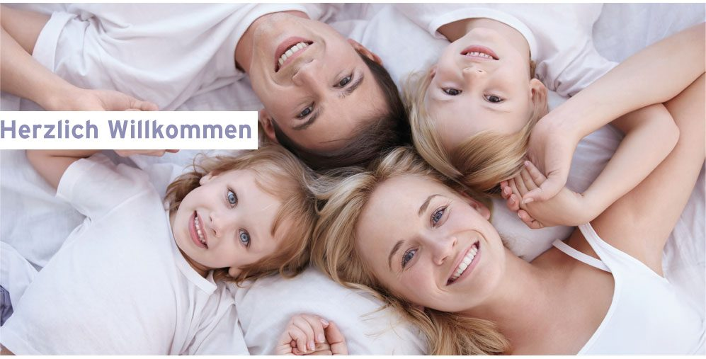

Unternehmen
Seit 1910 im Familienbesitz
Vom Wasserleitungsinstallateur, Brunnen- und Heizungsmacher in Sierning zum Haustechnikbetrieb mit 25 Mitarbeiterinnen und Mitarbeitern an zwei Standorten.
Firmengeschichte
Vier Generationen Haustechnik
- 1910 Gründung durch den Wasserleitungsinstallateur, Brunnen- und Heizungsmacher Johann Obermayr — den Großvater des heutigen Geschäftsführers Christian Madl — mit Standort in Sierning. Das Unternehmen bestand damals aus zwei Mitarbeitern.
- 1950 Maria Obermayr, Tochter von Johann Obermayr, übernimmt das Unternehmen und gründet die Einzelfirma „Obermayr & Madl“ in Steyr.
- 1960 In Kirchdorf an der Krems, Steiermärkerstraße 12, entsteht eine zweite Filiale mit zwei Mitarbeitern. Geschäftsführer wird Christian Madl.
- 1976 Umwandlung in eine GesmbH mit Christian Madl als Geschäftsführer. Die Mitarbeiterzahl steigt auf sieben Personen.
- 1981 Verlegung des Firmensitzes in die Steiermärkerstraße 24 — nun zählt das Unternehmen zwölf Mitarbeiter.
- 1986 Eröffnung der Filiale in Molln, Dr.-Bauer-Straße 5.
- 1997 Aufgrund der positiven Entwicklung wird das Betriebsgebäude in Kirchdorf an der Krems, Bahnhofstraße 14 — ein ehemaliges Gasthaus — bezogen. Die Mitarbeiterzahl steigt auf 25 Personen.
- 2004 Philip Madl, Sohn von Christian Madl, wird zum zweiten Geschäftsführer bestimmt.
- 2010 25 Mitarbeiter sind bei der Madl GesmbH beschäftigt. Trotz der schlechten Wirtschaftslage wurden keine Personaleinsparungen durchgeführt; Firmenorganisation, Struktur und Logistik wurden an die moderne Herausforderung angepasst.

Unternehmensleitbild
Wofür wir stehen
Wir bieten eine große Auswahl
Eine breit gefächerte Palette an Produkten und Dienstleistungen in Heizungs- und Sanitärtechnik, Klima- und Lüftungstechnik sowie alles rund um Solarenergie, Wassersparen und Wasserbelebung. Vom klassischen bis zum ländlichen Design findet jedermann bei uns das Richtige.
Wir sorgen für Behaglichkeit pur
Moderne Heizsysteme und die Komfortlüftungsanlage schaffen ein optimales Wohnklima. Professionelle Badplanung und ein breites Angebot an Wellnessprodukten ermöglichen ein Maximum an Behaglichkeit und Wohlgefühl.
Wir ermöglichen komplettes Service
Auf Wunsch die komplette Planung, Finanzierung, Ausführung, Wartung und das Service. Wir verbessern unser Angebot laufend und achten auf ein attraktives, kundenorientiertes Preis-Leistungs-Verhältnis.
Wir sind für unsere Kunden da
Dem Service kommt eine hohe Bedeutung zu: Wir sind stets für die Anliegen unserer Kunden da und lösen etwaige Probleme mit dem besten fachlichen Wissen unserer Mitarbeiter.
Umweltschutz wird großgeschrieben
Durch den Einsatz erneuerbarer Energien (Solarenergie, Pellets, Hackschnitzel) und innovativer Technologien (kontrollierte Wohnraumlüftung mit Wärmerückgewinnung, Photovoltaik) tragen wir aktiv zum Umweltschutz bei. Mittelfristig soll auf die Installation von Heizungen mit fossilen Brennstoffen verzichtet werden.
Wir fördern unsere Mitarbeiter
Unsere Mitarbeiter erhalten eine ihrem Einsatzbereich angemessene und leistungsbezogene Entlohnung. Wir anerkennen und fördern ihre Individualität, legen höchsten Wert auf fachliche Kompetenz und unterstützen die berufliche wie persönliche Entwicklung durch betriebliche und innerbetriebliche Ausbildung.
Team
Ihre Ansprechpartner
Team Kirchdorf
Philip Madl
Geschäftsführung, Projektierung, Angebotswesen
Manfred Limberger
Projektierung, Angebotswesen, Technik, Kundenservice
Gerold Pramberger
Projektierung, Angebotswesen, Technik, Kundenservice
Werner Pürstinger
Projektierung, Angebotswesen, Technik, Kundenservice
Erwin Kobler (SVP)
Ersatzteile, Verkauf, Lager
Carmen Ribeiro-Forstinger
Verkauf, Rechnungswesen, Schriftverkehr
Team Molln
Arif Mujkic
Geschäftsführung, Angebotswesen, Technik, Kundenservice
Partner und Marken
Womit wir arbeiten
Diese Hersteller begleiten unsere Projekte in Sanitär, Heizung und Energietechnik.
Sanitär und Bad
- Hansa
- Grohe
- Hansgrohe
- Kludi
- Vola
- Dornbracht
- Ideal Standard
- Sanitär-Holter
- SHT
- Impex
- Sanpol
- Conform
- Schock
- Burg
- Duravit
Duschen, Wannen, Wellness
- Duschwelten
- Duscholux
- Palme
- Hüppe
- Hösch
- Artweger
- Polypex
- Kaldewei
- Bette
- Villeroy & Boch
- Teuco
- Hoesch
- Novellini
Heizung, Energie, Komfort
- Viessmann
- Vaillant
- Bösch
- Heizbösch
- ÖkoFen
- Windhager
- Hargassner
- Guntamatic
- Fröling
- Vogel & Noot
- Stelrad
- Variotherm
- Zehnder
- KNV
- Rehau
Karriere
Lehre und Arbeit bei Madl
Wir legen höchsten Wert auf die fachliche Kompetenz unserer Mitarbeiter und fördern die berufliche sowie persönliche Entwicklung durch betriebliche und innerbetriebliche Ausbildung.
Unsere Mitarbeiter erhalten eine ihrem Einsatzbereich angemessene und leistungsbezogene Entlohnung. Wir nehmen auf persönliche Interessen Rücksicht und wissen, dass der Beitrag jedes Einzelnen wesentlich für die Entwicklung der Firma Madl ist.
- Lehre Installations- und Gebäudetechnik (Sanitär-, Heizungs- und Lüftungstechnik)
- Montage in Neubau, Sanierung und Service
- Projektierung und Angebotswesen im Innendienst
- Verkauf, Ersatzteillager und Rechnungswesen